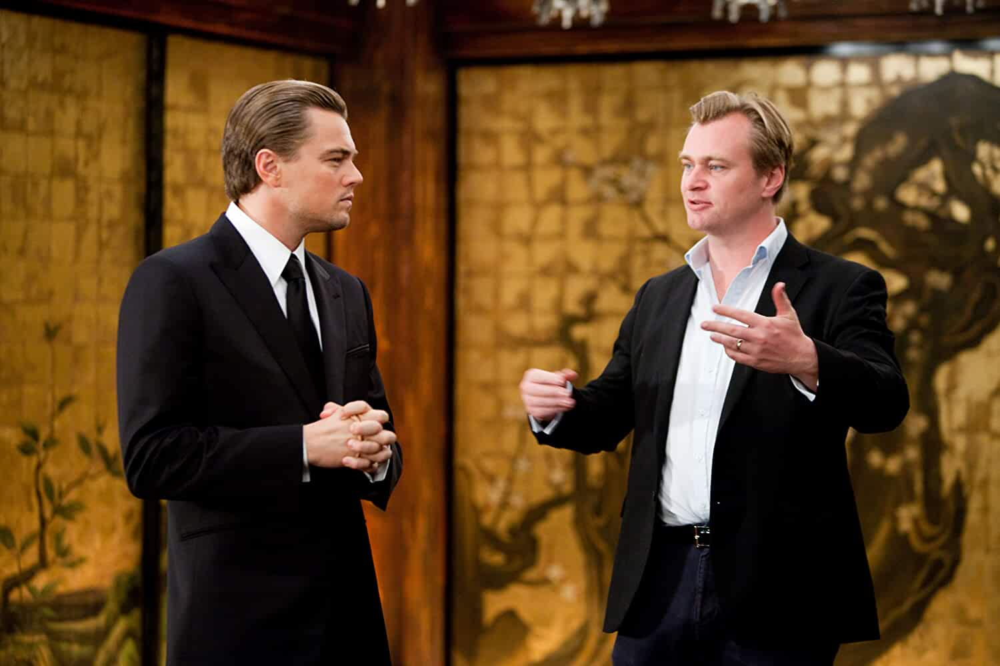
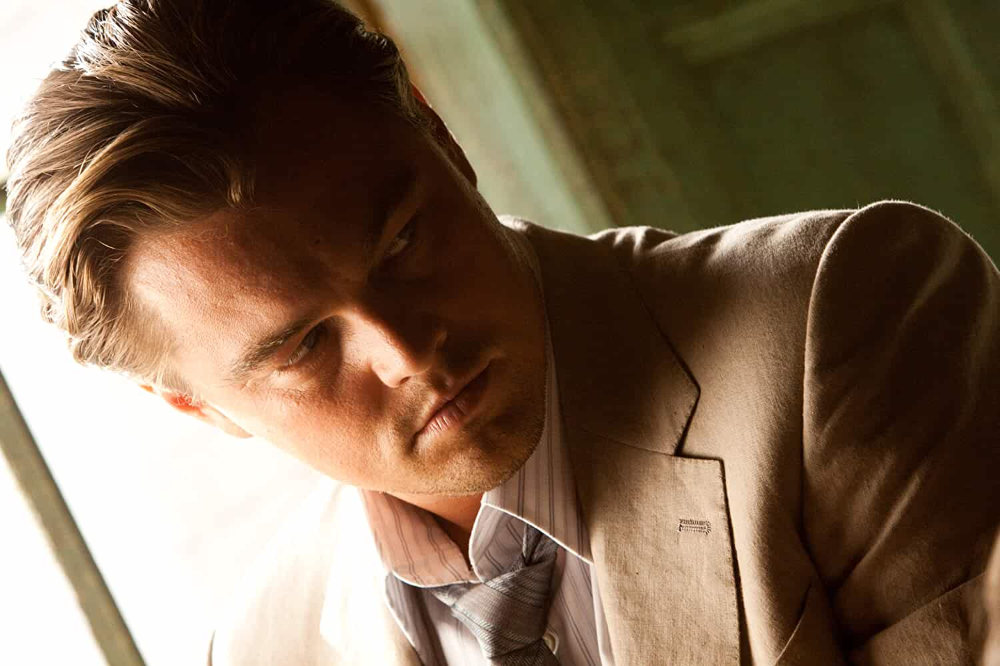

A thief who steals corporate secrets through the use of dream-sharing technology is given the inverse task of planting an idea into the mind of a C.E.O.
Director: Christopher Nolan
Writer: Christopher Nolan
Stars: Leonardo DiCaprio, Joseph Gordon-Levitt, Ellen Page
Photos


Full cast:
Director: Christopher Nolan
Writer: Christopher Nolan
Produced by: Zakaria Alaoui John bernard Chris Brigham Jordan Goldberd Emma Thomas
Music by: Hans zimmer
Casting by: John Papsidera
Story line
Dom Cobb is a skilled thief, the absolute best in the dangerous art of extraction, stealing valuable secrets from deep within the subconscious during the dream state, when the mind is at its most vulnerable. Cobb's rare ability has made him a coveted player in this treacherous new world of corporate espionage, but it has also made him an international fugitive and cost him everything he has ever loved. Now Cobb is being offered a chance at redemption. One last job could give him his life back but only if he can accomplish the impossible, inception. Instead of the perfect heist, Cobb and his team of specialists have to pull off the reverse: their task is not to steal an idea, but to plant one. If they succeed, it could be the perfect crime. But no amount of careful planning or expertise can prepare the team for the dangerous enemy that seems to predict their every move. An enemy that only Cobb could have seen coming. Written by Warner
Details
Country: USA | UK
Language: English | Japanese | French
Release Date: 16 July 2010 (USA)
Also Known As: Oliver's Arrow
Filming Locations: Bedfordshire, England